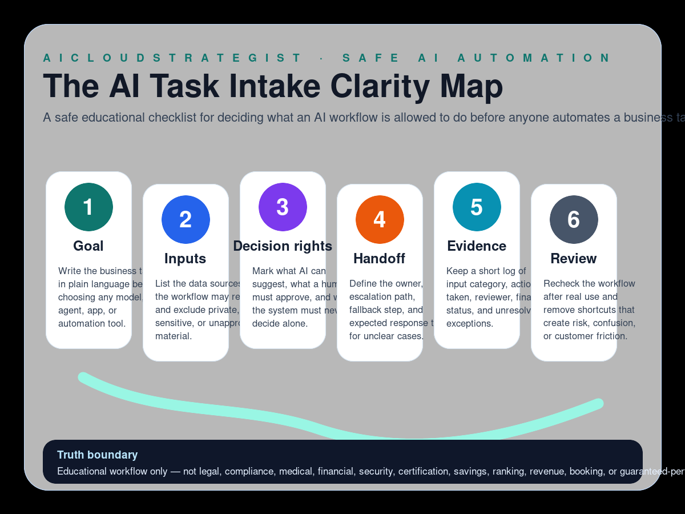

Safe educational AI workflow
The AI Task Intake Clarity Map
A safe educational checklist for deciding what an AI workflow is allowed to do before anyone automates a business task.

Six checks before automating a task
- Goal: Write the business task in plain language before choosing any model, agent, app, or automation tool.
- Inputs: List the data sources the workflow may read and exclude private, sensitive, or unapproved material.
- Decision rights: Mark what AI can suggest, what a human must approve, and what the system must never decide alone.
- Handoff: Define the owner, escalation path, fallback step, and expected response time for unclear cases.
- Evidence: Keep a short log of input category, action taken, reviewer, final status, and unresolved exceptions.
- Review: Recheck the workflow after real use and remove shortcuts that create risk, confusion, or customer friction.
How to use this map
Use this map before building or buying an AI workflow. It keeps the discussion focused on task clarity, approved inputs, human decision rights, handoffs, evidence, and review discipline.
Request a workflow diagnostic
If a real AI workflow is stuck between business owners, tools, evidence and human review, request a free AI workflow review before buying another platform.
Truth boundary
Educational workflow only — not legal, compliance, medical, financial, security, certification, savings, ranking, revenue, booking, or guaranteed-performance advice.